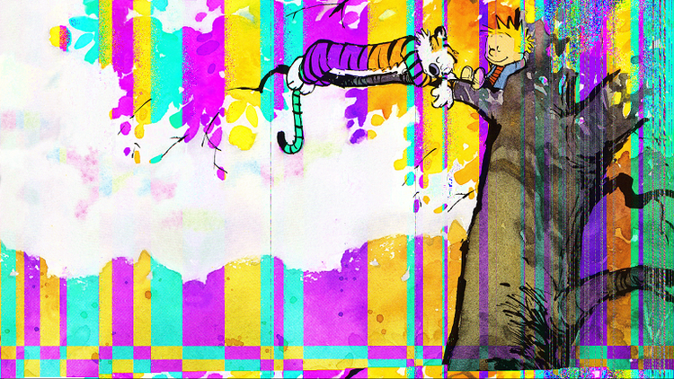

Classical glitches

Somehow I was introduced to this way of glitching images in 2015. I implemented a glitcher in Java with barely any programming knowledge, and never looked back. Here is a repository with basic tools in C# to glitch images this way.